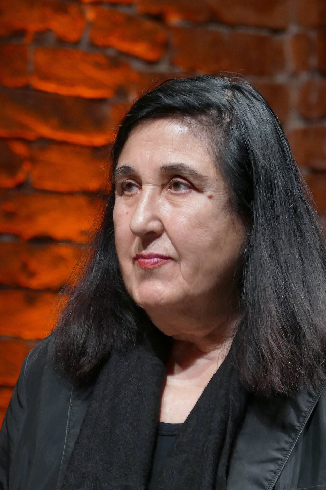

- Langue
- Turc · anglais · français
- Décalage horaire
- 2 heures en hiver, 1 en été
- Première séance
- Gratuite
- Urgence
- 112 · TelefonSeelsorge 116 123
On a appelé de la main-d’œuvre, une vie s’est construite
Quand l’accord de main-d’œuvre entre la Turquie et la République fédérale d’Allemagne fut signé, les deux pays supposaient qu’il s’agirait d’un arrangement temporaire. Le premier texte de l’accord prévoyait que les travailleurs ne resteraient que deux ans au plus et ne feraient pas venir leurs familles ; ces limites furent levées en quelques années, car les usines ne voulaient pas perdre leurs ouvriers expérimentés et les gens avaient commencé à construire une vie là où ils étaient venus. Quand l’Allemagne cessa de recruter des travailleurs étrangers en novembre 1973, bien des familles, voyant que les allées et venues ne seraient plus jamais aussi faciles, firent venir leurs conjoints et leurs enfants. Ce qui devait être temporaire est devenu la vie d’environ trois millions de personnes.
Ce que cette histoire a d’intéressant du point de vue psychanalytique, c’est la manière dont le sentiment de « provisoire » a continué de vivre à travers les générations. Beaucoup de gens de la première génération, même après des décennies en Allemagne, se voyaient toujours sur le point de rentrer : la maison construite au village, l’argent épargné, les projets de retraite étaient tous arrangés en vue d’un retour. La deuxième génération a grandi dans cette vie suspendue ; née dans un pays où ses parents n’étaient jamais tout à fait arrivés, elle fut tenue pour l’enfant d’un pays d’origine qu’elle n’avait jamais tout à fait quitté. Elle parlait allemand à l’école et turc à la maison ; l’été, elle était « Almancı » en Turquie, l’hiver « étrangère » en Allemagne. Pour la troisième et la quatrième génération, la question n’est plus tant de savoir où l’on appartient que de savoir dans quelle langue et devant qui l’on peut dire « je ».


L’histoire des migrants de Turquie en Allemagne a aussi produit une littérature et un cinéma qui racontent cette expérience de l’intérieur de l’allemand. Le long poème d’Aras Ören, Was will Niyazi in der Naunynstraße, publié en 1973, racontait la vie d’une rue de Berlin-Kreuzberg par les yeux d’un ouvrier venu de Turquie. Emine Sevgi Özdamar a donné à son premier livre, publié en 1990, le titre Mutterzunge : en allemand la langue maternelle se dit Muttersprache, mais Özdamar, traduisant mot à mot l’expression turque ana dil, a porté dans l’allemand une langue où l’organe et la parole sont nommés par le même mot. Head-On de Fatih Akın, Ours d’or à Berlin en 2004, a porté à l’écran, avec toute sa dureté, l’effort de la deuxième génération pour trouver une place entre deux langues et deux mondes. La question que ces œuvres partagent est aussi celle du travail psychanalytique : dans quelle langue peut-on, entre deux langues, raconter sa propre histoire ?
De quoi parle-t-on souvent en séance ?
Les questions que les analysants vivant en Allemagne apportent en séance reflètent les formes différentes que prend la vie loin de chez soi à chaque génération. Pour la première génération : la retraite, la vieillesse et la décision de rentrer ; un deuil ajourné pendant des années, la mort d’un parent lointain, mis en mots seulement maintenant. Pour la deuxième : la tension entre les attentes de ses parents et sa propre vie, les exigences contradictoires de deux cultures dans le mariage et les relations, la question de la langue dans laquelle élever ses enfants. Pour les générations plus jeunes : les expériences de discrimination, les questions d’identité et le poids affectif compliqué du rapport avec la Turquie. À côté de cela, il y a les souffrances qui ne sont pas directement liées à l’exil mais qui se vivent autrement en exil : angoisse, périodes dépressives, difficultés relationnelles ou épuisement au travail.
Informations pratiques
Décalage horaire. L’Allemagne utilise l’heure normale d’Europe centrale (UTC+1) en hiver et l’heure d’été d’Europe centrale (UTC+2) en été. La Turquie est à UTC+3 toute l’année ; elle a donc deux heures d’avance en hiver et une en été. Les horaires sont fixés selon l’endroit où vous vous trouvez.
L’assurance. L’assurance maladie légale allemande (gesetzliche Krankenversicherung) ne couvre la psychothérapie que par des thérapeutes agréés en Allemagne et conventionnés avec les caisses. Ces séances n’entrent pas dans ce cadre et la caisse ne rembourse pas. Si vous cherchez un thérapeute pris en charge par l’assurance, vous pouvez utiliser le service de rendez-vous au 116 117.
La langue. Les séances peuvent se tenir en turc, en anglais ou en français ; il est possible d’aller d’une langue à l’autre. Je ne propose pas de séances en allemand.
En cas d’urgence
Ces séances ne sont pas un service d’urgence. Si vous risquez de vous faire du mal ou d’en faire à quelqu’un d’autre, appelez aussitôt le 112. En Allemagne, la TelefonSeelsorge est joignable à toute heure, gratuitement et de façon anonyme ; la même institution offre aussi un soutien par écrit et par chat.
- Secours d’urgence112
- TelefonSeelsorge0800 111 0 111
- TelefonSeelsorge0800 111 0 222
- TelefonSeelsorge116 123
- Rendez-vous de psychothérapie remboursée116 117
Questions fréquentes
Je suis né en Allemagne et mon turc est faible. Pouvons-nous quand même nous voir ?
Oui. Les séances peuvent se tenir en turc, en anglais ou en français, et vous pouvez aller d’une langue à l’autre. Les moments où vous ne trouvez pas un mot en turc, comme ceux où vous passez d’une langue à l’autre, font partie du travail.
La Krankenkasse couvre-t-elle les séances ?
Non. L’assurance maladie légale allemande ne couvre que la psychothérapie avec des thérapeutes agréés et conventionnés en Allemagne. Si vous avez une assurance privée, je vous recommande de vous renseigner sur ses conditions auprès de votre assureur.
À quelles heures les séances peuvent-elles se tenir ?
Les horaires sont fixés ensemble selon votre fuseau horaire. La Turquie ayant deux heures d’avance en hiver et une en été, des séances en soirée conviennent généralement aux deux parties.
La première séance est gratuite. Pour fixer un jour et une heure ou poser vos questions, vous pouvez m’écrire ; il suffit d’indiquer dans votre message la ville d’Allemagne où vous vivez.
Formulaire de contact